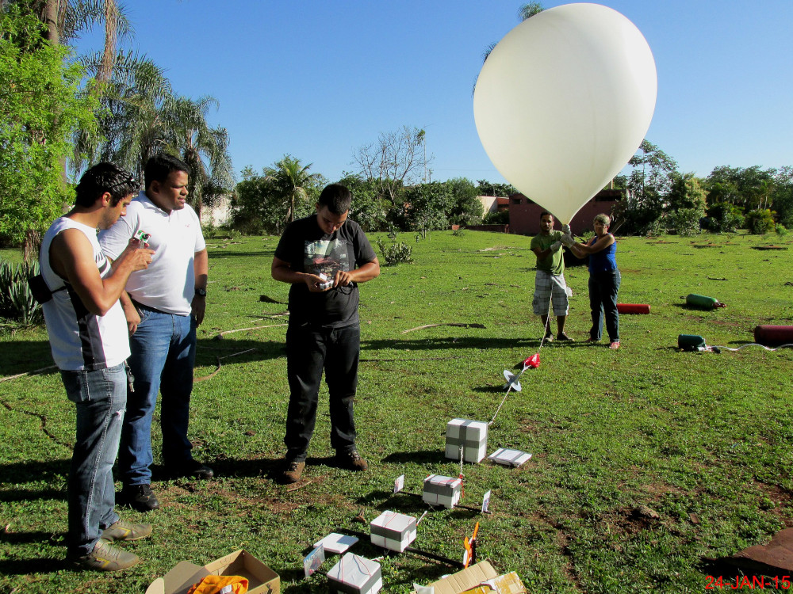
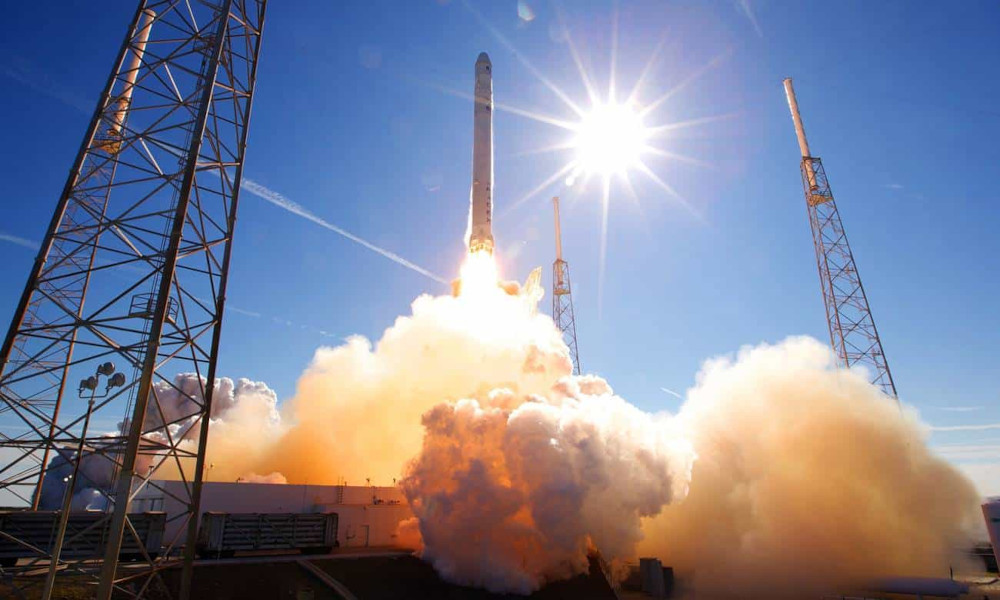
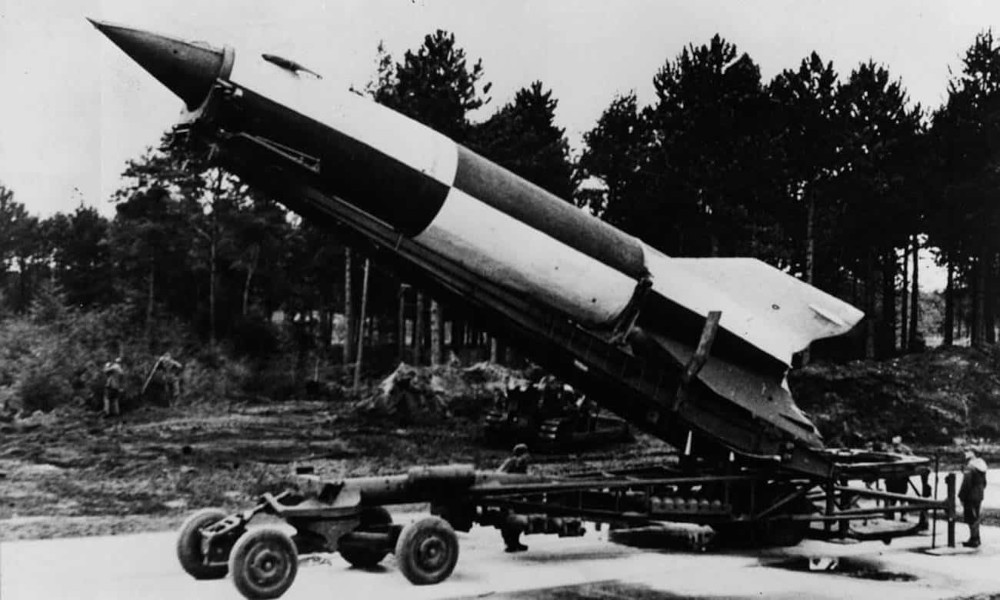
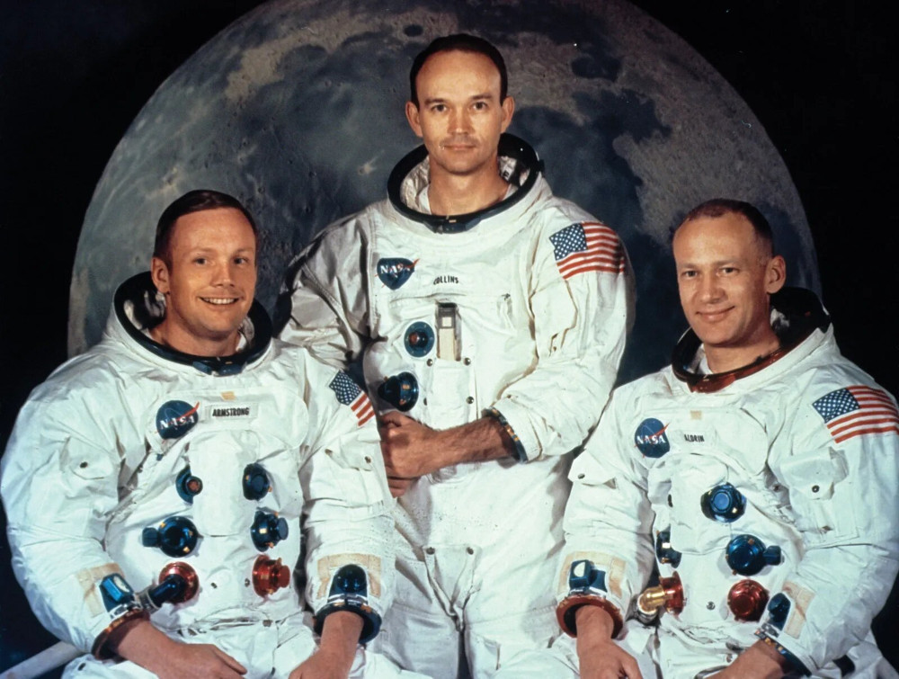

Começando pelo começo
Sem dúvidas, o Homem, desde que andava pelas cavernas, sempre foi fascinado pelo céu. Por mais "comum" que seja nos dias atuais devido à grandes bilionários em busca de mais dinheiro lançar foguetes já não geram tantas expectativas nas pessoas ultimamente. Porém, hà alguns pequenos milhares de anos atrás, a idéia de ver um pedaço de metal enorme e pesado, explodindo no céu, para algumas cabeças grandes e peludas seria como o fim do mundo ou os deuses do rock (desculpa, não poderia deixar essa passar) e mais, cogitar que os parentes deles no futuro construiriam não só um foguete, como levariam pessoas para fora da Terra, seria um belo motivo para virar churrasquinho na fogueira...
O que Budha e a Alemanha Nazista tem em comum?
Se você respondeu a suástica... bem, parabéns, você acertou! Mas calminha ai Albert Eistein, não é só isso. Fato é que, foguetes nunca estiveram tão em alta como durante a Guerra Fria entre a União Soviética e os Estados Unidos, um competindo com o outro para ver quem tem a vara maior, mas isso não vem ao caso. Os foguetes podem parecer uma coisa super complicada (e é) mas, na teoria, ele é bem simples. Veja bem. Um foguete é simplesmente uma câmara gigante que se desloca expelindo atrás de si um fluxo de gás (não, não estou me referindo aos peidos da sua mãe). Se isso ainda está dificil para você entender, jogador de lol, imagine um balão. Sim, esses de aniversários que você não vê há anos porque não sai de casa.
A terceira Lei de Newton descreve que toda ação tem uma reação oposta na mesma intensidade, então, em lançamentos de foguetes, a ação ocorre na queima do combustível, cujos jatos de gás quente saem por um pequeno bocal na parte de baixo do foguete, enquanto a reação é justamente o "empurrão" para cima, direção contrária da liberação dos jatos de gás. Ou seja: enquanto a queima do combustível empurra compostos para baixo, o foguete é empurrado para cima como reação — mas somente se o empuxo gerado pelos motores for maior do que a força de seu peso. Por isso é necessário queimar uma enorme quantidade de combustível para lançar um foguete e, quanto mais pesado ele for, maior será a carga de combustível necessária para que o veículo saia do chão.
Você deve estar se perguntando, ta, mas ainda não sei o que Budha tem a ver com os Nazis. Calma lá precoce, já vou chegar nessa parte. Bom, imagino que você saiba que para um foguete decolar, ele precisa queimar combustível (e muito!) e para isso acontecer, precisa de toda uma reação que, bem, convenhamos, eu não estou a fim de me alongar (eu não sei mesmo), mas tudo isso tem o fogo em comum, e para se ter fogo, precisamos de... isso! Pólvora! E é ai que entra os nossos precoces amigos dos olhos puxados (aqui é um elogio, ok, mas antes não), supostamente (tem alguém ainda que duvide da inteligência dos asiáticos?) responsáveis pela invenção da pólvora, há mais de sete séculos (!!) atrás, desenvolvidos por alqumistas chineses que ficaram perplexos com um truque que deu muito errado: o fogo de artificio. E os Alemães? Bem... digamos que eles foram o primeiro país a produzir um foguete capaz de cruzar as fronteiras do espaço. O cientista romeno Hermann Oberth, aos 14 anos (ainda bem que não é meu primo), idealizou o próprio foguete de recuo, que poderia se mover pelo espaço usando apenas seu próprio escapamento. As contribuições de Oberth foram manchadas na História quando ele ajudou a desenvolver o foguete V-2 para a Alemanha nazista durante a Segunda Guerra Mundial, usado para os bombardeios destruidores em Londres. Enquanto Budha queria apenas soltar fogos de artificio na rua com seus amigos, Hitler gostava de explodir casas e tudo o que tinha em volta delas. E essa é a relação entre Budha e os Alemães.
Primeiros seres vivos no espaço
Que os americanos foram os primeiros a mandarem homens à Lua, todos já sabemos disso (tirando, é claro, você, jovem ou senhorzão terraplanista). Mas, porém, entretanto, todavia, a União Soviética, em novembro de 1957, decide mandar o primeiro ser vivo ao espaço. Antes, o que era apenas um satélite artificial (Sputnik), agora, era o Sputnik II, levando consigo uma cadelinha, chamada Laika. Foi um fato histórico, nunca antes um Homem havia mandado um ser vivo para o espaço (tirando Jesus Cristo), o que depois levou os americanos a enviarem homens à Lua. Só que esse não teve um final feliz, pois nossa querida companheira, ficou perdida entre as estrelas...
"Um pequeno passo para o Homem, um grande salto para a Humanidade"
Oito anos após o primeiro ser humano ter viajado ao espaço, aconteceu um dos principais episódios desenvolvidos pela humanidade. No dia 20 de julho de 1969, a Apollo XI foi lançada rumo à Lua; na nave espacial estavam a bordo os astronautas Neil Armstrong, Michael Collins e Edwin Aldrin Jr. Dessa vez o homem não se contentou com apenas viajar para o espaço, foi mais longe ainda, pousou na superfície lunar. Os tripulantes tiveram a oportunidade de pisar no “solo” de outro corpo celeste, nosso satélite natural. Após o homem ter pisado pela primeira vez na superfície rochosa com cheiro de pólvora queimada aconteceram novas 6 missões Apollo. Desse modo, outros doze astronautas tiveram o privilégio de pisar na Lua.
Isto foi o melhor que o Luan do passado conseguiu fazer. Espero que você, Luan do futuro, esteja pica!